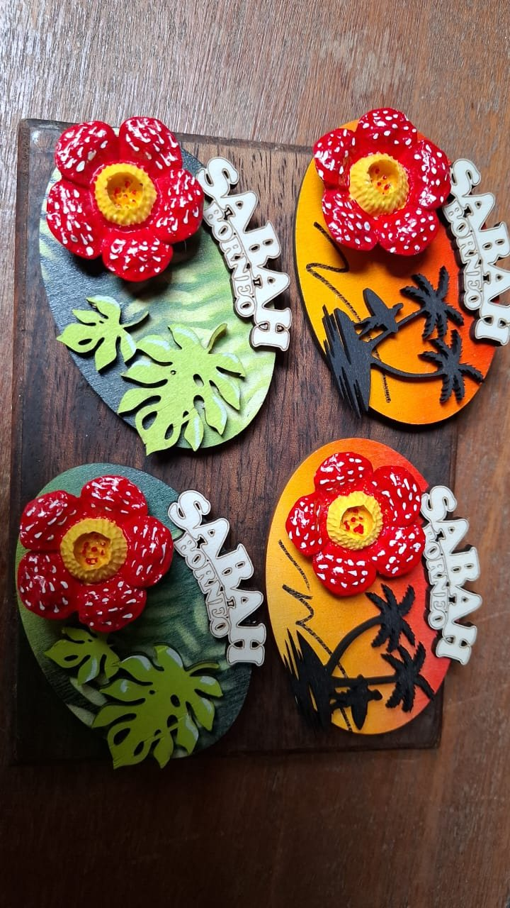
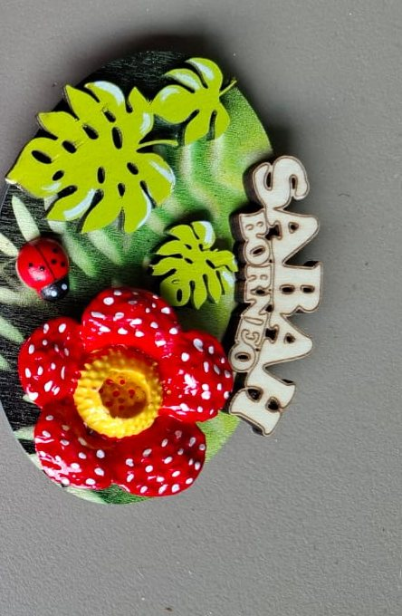
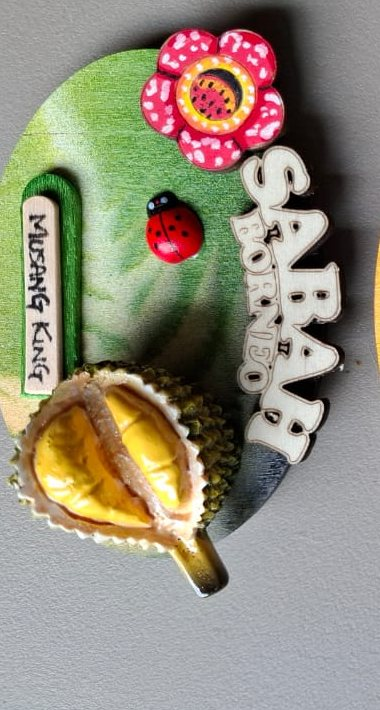
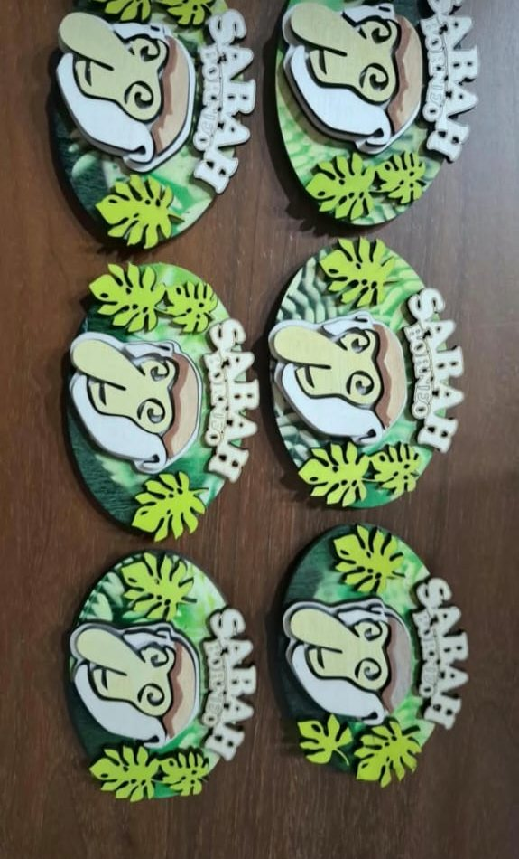

Rafflesia
One of the largest flowers in the world, found in Sabah's highland forests. It blooms for only a few days.
Selamat datang ke Sabah!
Handmade wooden magnets inspired by Sabah's rainforest, its giant Rafflesia flower, the king of fruits and the peaks of Mount Kinabalu. Each one is cut, layered and painted by hand.

Stories of Sabah
Our designs come from the plants, fruits and wildlife that make Sabah special, so each souvenir is also a small introduction to Borneo.

One of the largest flowers in the world, found in Sabah's highland forests. It blooms for only a few days.

Creamy, golden and famous across Malaysia. Love it or not, no trip to Borneo is complete without durian.

The hornbill is one of Borneo's best-loved birds, often seen flying over the rainforest canopy.
From wood to souvenir
No two magnets are exactly the same. Small differences in colour and detail are part of the handmade charm.
Each shape starts as a piece of natural wood.
Rainforest greens and Kinabalu sunsets are painted onto the base.
Flowers, leaves, fruit and the Sabah Borneo name are added in raised layers.
A magnet goes on the back, light enough to pack home in your bag.